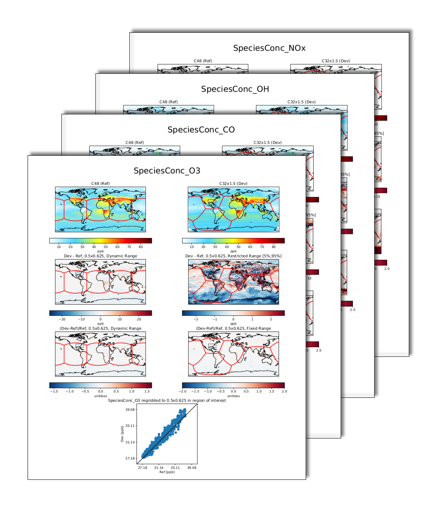

Stretched-grid, CMake, and Continuous Integration Developments in GCHP
Liam Bindle
2020-01-29
Stretched-grid
- Transform to the cube‑sphere's grid-boxes
- Nimble control over the target region and resolution
- Easy to implement in GCHP because MAPL 2.0 and FV3 support it
SG Testing
- Added stretched-grid support to GCPy benchmarking
- This lets me compare high resolution GCHP simulations to stretched-grid simulations
- This work is in progress

CMake
CMake Support
- Complete overhaul of the build‑system
- GEOS-Chem added CMake support in October (version 12.6)
- MAPL 2.0 and future releases only support CMake
- In GCHPctm we use existing CMakeLists in GEOS-Chem, MAPL, and 6 other internal dependencies

Continuous Integration
Continuous Integration
- Added to GEOS-Chem in October and GCHP in December
- Future work should add runtime tests and expand the build matrix
- A pre-release versioning scheme is being discussed